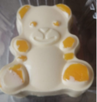

Postres AJUMI
Somos una empresa de venta de Postres Online
Somos una empresa emprendedora de venta de postres caseros, queremos brindarles buenos productos, no muy costosos, y saludables. Ponemos todo nuestro corazón en la preparación de postres y trabajamos para poder así satisfacer a cada uno de nuestros clientes.
Que podemos ofrecerte
Nosotros podemos ofrecerte:

- Postres pequeños en vaso (Detalles)
-
- Sabor a Fresa
- Sabor a Mora
- Sabor a Limon
- Sabor a Maracuya
- Sabor a Durasno

- Postres medianos en forma de Oso
-
- Sabor a Fresa
- Sabor a Mora
- Sabor a Limon
- Sabor a Lulo
- Sabor a Maracuya
- Sabor a Durasno
- Sabor a Piña
- Sabor a Chocolate

- Postres grandes para la Familia
-
- Sabor a Fresa
- Sabor a Mora
- Sabor a Limon
- Sabor a Lulo
- Sabor a Maracuya
- Sabor a Mango
- Sabor a Durasno
- Sabor a Guanabana
- Sabor a Piña
- Sabor a Cereza

Te dejo esta pagina para que puedas conocer los beneficios de las frutas, y eligas bien el sabor de tu postre
Click aquí para ver